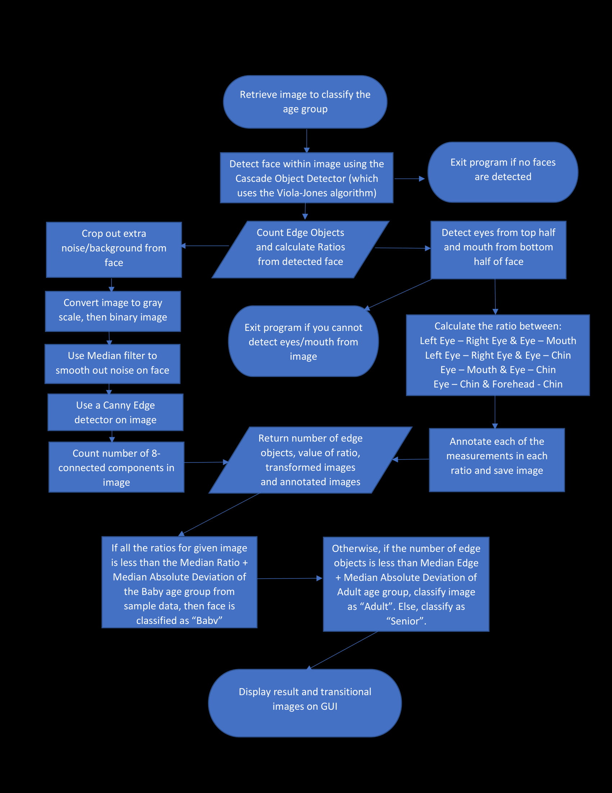
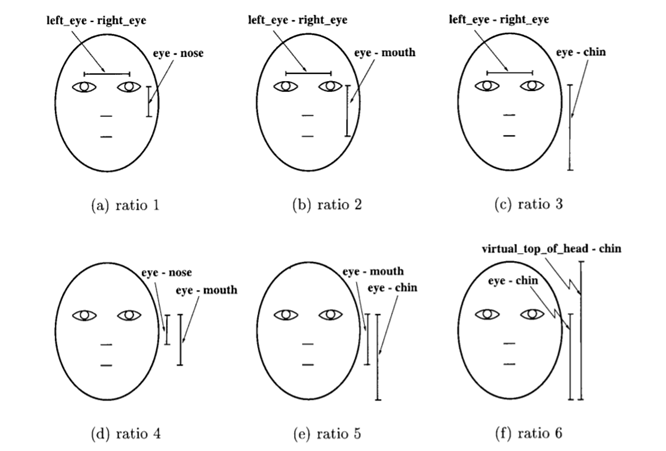
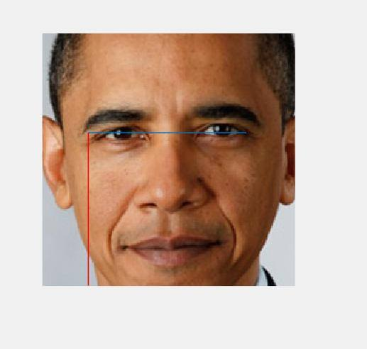
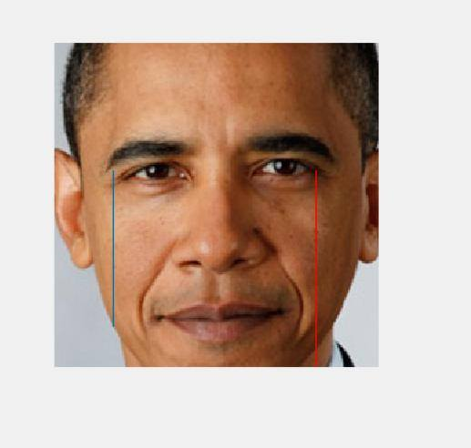
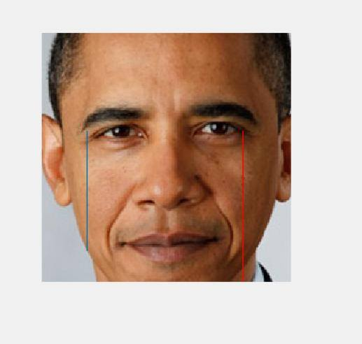
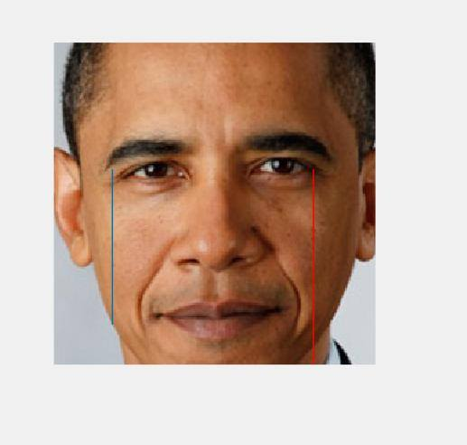

PROCESS
 The calculation of face ratio comes from Age Classification from Facial Images
Ratio: 
 

Edge:
Our inspiration behind doing a project based on Age Detection was from the website How-Old.net (https://www.how-old.net/). We were motivated to do a project based on face detection, but wanted to detect more information behind the image of a person, such as age, sex, or race. We chose to detect age because aging is universal.
A real life situation we can use this concept is for crime investigations. If we have an image of an unknown person, we can use this program to compare this individual's face with our database, and we will be able to find the age range of the individual. It can also be used in the marketing field, where we can utilize this technology to target age specific content, by detecting the customer demographics and product profiling.
Although we originally wanted to detect the exact age, or even the age range of a person by decade, we were unable to do so due to the large amount of images required in the database to fulfill this process. If we didn't use hundreds of images, we will not be able to correctly determine which to choose between certain age groups. For example, we found the difference betwen people in their 20s and 30s or 70s and 80s to be very small, and highly dependent on the individual's face instead of a general trend within the age group. Thus, we limited the number of age groups to 3 which had the largest difference; Baby, Adult, and Senior.
At first, we are actually trying to implement an application that is capable to detect human emtions.However, as we have finished 30% of the project, we realized that we already used up 50% of the time. In addition, the research papers regarding to emtion detections were using fuzzy networks and etc, which they all required us to commit a large amount of time to do research. We reached to the conclusion that with the given amount of time, it is unlikey to finish the project. Hence, we decided to use the face detection foundation that we have built and apply it to the age detection area.

There are several limitations that appear in this method, however.
The face in the picture must be a frontal face. If the face is angled (say, tilted or looking sideways) the Face detector is not trained to detect the image, so this methodology won't work.
Furtheremore certain aspects of the face could affect the result. If a person is wearing glasses in the image, it can prevent the eye detector from finding the eyes, and thus we cannot classify the face to any age group. One common example is a beard or hair on the face, which increases the number of edges and often the program classifies the image as a senior (even though the face could be an adult). See the image below as an example.
We have also noticed that the hair color/skin color also changes the result. If the skin color of the person is either very light or dark, the program often misses the wrinkles or outline on a person's face, which decreases the edge count, and can classify the person as younger than their real age group. One possible solution is to alter the value of the threshold when converting the image from RGB to binary depending on the brightness of the person's skin color.
Finally, if the image resolution of the original image is too big, this increases the amount of edge count, and the program tends to classify the image as senior. This is because a large image resolution would display the individuals skin in more detail (including blemishes), thus there are more objects counted during the edge detection. Some solutions we can do is to resize the image to a lower resolution if we determine it's too high, or change the threshold for edge detection depending on the size of the image.